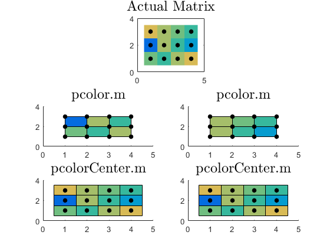

Contents
function examplePcolorCenter
Demonstrate rectilinear uniformly spaced data
make data
xi = 1:4; yi = 1:3; [x,y]=meshgrid(xi,yi); z = [7 6 8 9;2 8 6 4;9 8 7 6]; % make plots figure(1) %show what is should look like subplot(3,2,1:2) imagesc(xi,yi,z) caxis([0 12]) set(gca,'ydir','normal') hold on plot(x,y,'k.','markersize',20) axis equal axis([0 5 0 4]) title('Actual Matrix','interpreter','latex','fontsize',18); % plot with pcolor (some data omitted) subplot 323 hold on pcolor(xi,yi,z); plot(x,y,'k.','markersize',20) caxis([0 12]) axis([0 5 0 4]) title('pcolor.m','interpreter','latex','fontsize',18); % flip data and plot again (RESULTS CHANGE!) subplot 324 hold on pcolor(fliplr(xi),fliplr(yi),rot90(z,2)) plot(x,y,'k.','markersize',20) caxis([0 12]) axis([0 5 0 4]) title('pcolor.m','interpreter','latex','fontsize',18); %plot with pcolorCenter (all data is there) subplot 325 hold on pcolorCenter(xi,yi,z); plot(x,y,'k.','markersize',20) caxis([0 12]) axis([0 5 0 4]) title('pcolorCenter.m','interpreter','latex','fontsize',18); %plot with pcolorCenter flipped (results are the same) subplot 326 hold on pcolorCenter(fliplr(xi),yi,fliplr(z)) plot(x,y,'k.','markersize',20) caxis([0 12]) axis([0 5 0 4]) title('pcolorCenter.m','interpreter','latex','fontsize',18);
demonstrate unevenly spaced data
n = 6; r = (1:n)'/n; theta = pi*(0:n)/n; X = r*cos(theta); Y = r*sin(theta); C = r*cos(2*theta); f2 = figure(2); subplot 211 pcolor(X,Y,C) axis equal tight title('pcolor.m','interpreter','latex','fontsize',18) axis([-1 1 -1 1]*1.5) subplot 212 pcolorCenter(X,Y,C) axis equal tight title('pcolorCenter.m','interpreter','latex','fontsize',18) axis([-1 1 -1 1]*1.5)
end